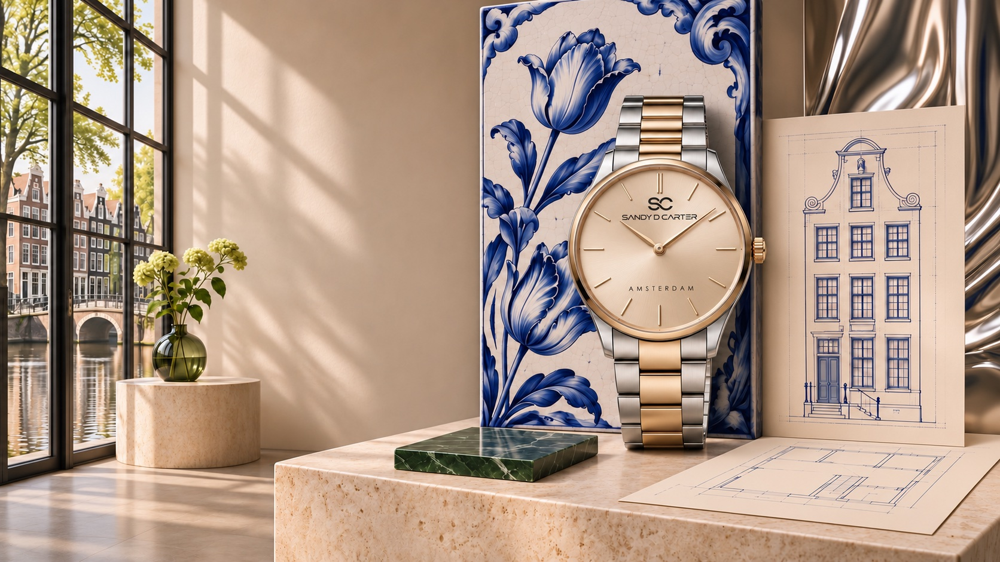

Premium design without visual excess
The best premium watches for men balance presence with restraint. A dial should be easy to read, a case should feel proportionate and every detail should support the whole. SANDY D. CARTER approaches men’s watches through Amsterdam-inspired minimalism and contemporary European character.
Our planned men’s collection is intended for work, travel and everyday dressing. It sits within the world of affordable luxury watches while maintaining a distinctive designer point of view.
How to choose a designer watch for men
Begin with proportion and versatility. Consider how the case sits on your wrist, how the dial works with your wardrobe and whether the design will remain relevant beyond one season. Verified materials, movement, warranty and dimensions will be provided for every approved SANDY D. CARTER model before sales begin.

Frequently asked questions
What defines a premium watch for men?
Thoughtful design, balanced proportions, reliable verified specifications and clear customer policies matter more than decorative complexity.
When will the men’s collection launch?
The collection is being prepared for launch. Final models, dates and availability will be announced through official channels.